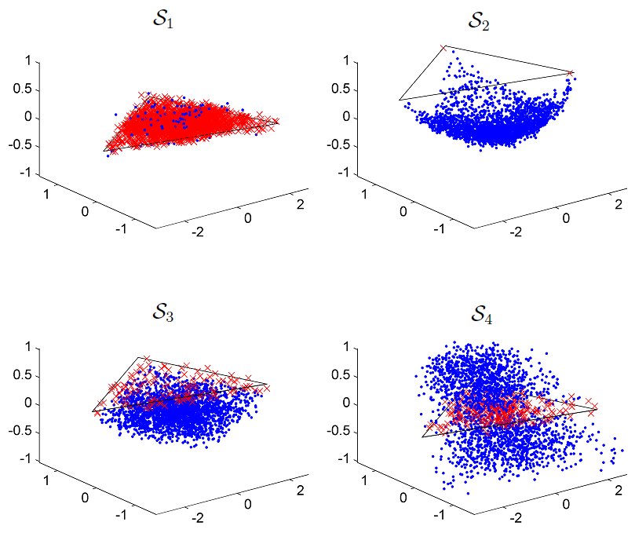

Detection of non-linear mixtures using PPNMM-based unmixing
We consider the problem of detecting non-linear mixtures in hyperspectral images. studies a nonlinear mixing model for hyperspectral image unmixing and nonlinearity detection.
The proposed model assumes that the pixel reflectances are nonlinear functions of pure spectral components contaminated
by an additive white Gaussian noise. These nonlinear functions are approximated by polynomials leading to a polynomial
post-nonlinear mixing model. We have shown in a previous work that the parameters involved in the resulting model can be
estimated using least squares methods. A generalized likelihood ratio test based on the estimator of the nonlinearity parameter
is proposed to decide whether a pixel of the image results from the commonly used linear mixing model or from a more general
nonlinear mixing model. To compute the test statistic associated with the nonlinearity detection, we propose to approximate
the variance of the estimated nonlinearity parameter by its constrained Cramér-Rao bound. The performance of the
detection strategy is evaluated via simulations conducted on synthetic and real data. Some results are depicted in Fig. 1.

Fig. 1. Pixels detected as linear (red crosses) and nonlinear (blue dotted) for 4 images: S1 (linear model), S2 (Fan model), S3 (generalized bilinear model), and S4 (polynomial post-nonlinear model). Black lines depict the simplex corresponding to the noise-free case linear mixing model.
The proposed method and the main results have been published in IEEE Trans. Image Processing:
- article
 .
.
The corresponding Matlab codes are available here:
- Matlab codes
 [ .zip - 22.0Ko ].
[ .zip - 22.0Ko ].